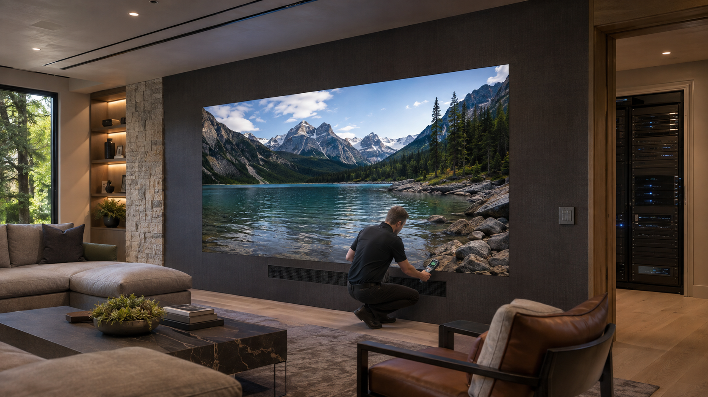

MicroLED Room Cooling Requirements
How to calculate display heat, separate rack loads, and coordinate quiet residential HVAC.
MicroLED room cooling should be designed from the final cabinet count, maximum rated cabinet power, and the separately calculated equipment-rack load. Convert display watts to BTU per hour, assign each heat source to the zone where it is physically located, and let the mechanical engineer size quiet supply, return, and control capacity for the maximum design condition. Typical operating estimates help predict everyday behavior, but they should not replace the maximum load unless project-specific measurements and operating assumptions are formally approved.
A premium media room can have a comfortable cooling load before the display is turned on and an entirely different load during a long movie, sports event, or gaming session. The wall is only one part of that change. Video processing, source devices, network equipment, control hardware, and amplification may sit in a remote rack, a nearby closet, or the room itself. The drawings need to show where each watt becomes heat.
Calculate the Display Heat from Cabinet Count
The most reliable early calculation uses the final cabinet schedule rather than a generic allowance for a large screen. NIST conversion factors support the standard relationship of approximately 3.412 BTU/h for each watt of heat flow. The project calculation is therefore straightforward:
The result is the display contribution, not the complete room load. Occupants, lighting, solar gain, envelope conditions, fresh-air requirements, and every local electronic device remain part of the mechanical engineer's room calculation. ASHRAE guidance for residential space conditioning emphasizes calculating the loads of each conditioned room before selecting capacity and distribution.
Worked Example: A 36-Cabinet Boulder Wall
A typical 4K Boulder configuration uses 36 cabinets. Each P0.9 cabinet is rated at 91 watts maximum and occupies approximately 2.18 square feet. The maximum display load is 311 BTU/h per cabinet, or 142 BTU/h per square foot.
The estimated typical range on the Boulder Series specification sheet is 124–155 BTU/h per cabinet. Across 36 cabinets, that equals approximately 4,471–5,589 BTU/h during representative operation. It is useful context, but it is not the value the mechanical engineer should automatically use to reduce system capacity.
Why typical load is a range
Direct-view display power changes with brightness, image content, black-level electronics, calibration, and room presets. Industry technical guidance distinguishes maximum, black-level, standby, and content-dependent typical power. A fixed “base BTU” number would imply certainty that the operating conditions do not support.
Separate the Display Zone from the Equipment Zone
If the video processor and source equipment are in a rack outside the media room, their heat belongs to that rack zone. If the rack sits inside the room or shares its return-air path, the room system must carry that load. Amplifiers can be especially important during sustained listening, and their thermal contribution should come from the actual equipment schedule rather than the branch-circuit rating.
Ventilation Is Not the Same as Cooling Capacity
An open grille or a larger wall cavity does not prove that heat will leave the room. Air needs a complete path, and the HVAC system needs enough sensible capacity at the hours when the wall and equipment are operating. A supply without an effective return can leave a warm layer near the ceiling. A rack fan without conditioned makeup air can recirculate the same warm air. A return placed too close to a supply can bypass the occupied zone.
The wall construction also affects the decision. Front-service access does not mean the area behind the wall should become an uncontrolled plenum. The integrator must communicate display depth, support structure, cabinet layout, service method, cable routes, and allowable temperature conditions. The architect and mechanical engineer can then decide whether the display load is handled through the room, a coordinated cavity path, or another engineered approach.
Quiet Operation Has to Be Designed with the Load
A private cinema or media room can meet its temperature target and still fail acoustically. High air velocity, undersized grilles, abrupt duct transitions, equipment fans, and cycling compressors can become audible during quiet scenes. The mechanical design should establish both thermal and acoustic criteria before duct sizes and equipment locations are fixed.
That often favors lower-velocity distribution, appropriately sized returns, vibration isolation, thoughtful zoning, and controls that can sustain a long viewing session without aggressive temperature swings. The right solution depends on the residence and local mechanical design; it should not be reduced to a universal grille size or airflow number.
What the Integrator Is Actually Deciding
The authorized dealer does not size the home's HVAC equipment. The dealer supplies the inputs that make an accurate mechanical design possible and verifies the installed technology under realistic operating conditions.
| Project input | Integrator responsibility | Mechanical coordination |
|---|---|---|
| Display geometry | Final active dimensions, cabinet count, mounting depth, and service approach. | Assign display heat to the correct room or cavity and preserve access. |
| Display power | Maximum watts per cabinet, maximum wall load, and labeled typical planning range. | Use the approved design load and document any accepted diversity assumption. |
| Equipment rack | Final rack elevation, device power data, operating schedules, and airflow requirements. | Size and control the rack zone separately when its load or schedule requires it. |
| Room use | Expected session length, occupancy, calibrated modes, lighting scenes, and audio system. | Model simultaneous internal loads and maintain the project's acoustic criteria. |
| Commissioning | Operate the wall, sources, processing, and audio in representative modes. | Verify room temperature, rack inlet conditions, airflow, noise, and control response. |
Commission the Thermal Design After the System Is Complete
Final verification should happen with the doors, millwork, acoustic treatments, seating, lighting, display, and rack in their finished condition. Temporary construction airflow does not represent the completed room. The wall should run long enough in a demanding calibrated mode for temperatures to stabilize, and the rack should be tested under a representative simultaneous load.
- Confirm the installed cabinet countReconcile the final wall against the approved thermal calculation and electrical schedule.
- Run a sustained operating testUse representative bright content, processing, audio, lighting, and occupancy assumptions.
- Measure both zonesRecord occupied-room temperature plus rack inlet and exhaust conditions where applicable.
- Check airflow pathsVerify that finished doors, grilles, filters, millwork, and acoustic materials do not block the intended path.
- Listen at the seatsConfirm that air distribution and equipment cooling meet the project's acoustic expectations.
- Document the baselineRecord settings, measurements, test duration, and seasonal control assumptions for future service.
Cooling belongs in the same early coordination process as structure, electrical service, signal pathways, audio, lighting, and finish transitions. Our guides to specifying MicroLED with architects and designers and planning the MicroLED signal chain and equipment rack cover those related decisions in more detail.
Primary Technical References
- NIST: Guide to SI conversion factors for heat flow and power
- ASHRAE Handbook: Residential Space Conditioning
- Technical explanation of maximum, black-level, standby, and content-dependent LED display power
Give the Mechanical Engineer Real Project Inputs
Your authorized Opal dealer can provide the final cabinet schedule, display thermal load, rack equipment data, service geometry, and operating assumptions needed for coordinated residential HVAC design.
Contact an Authorized Dealer